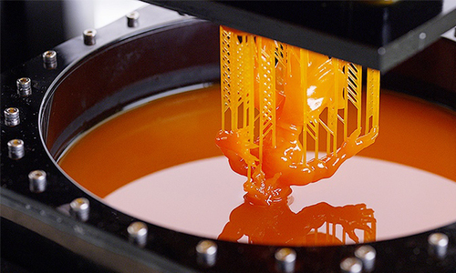
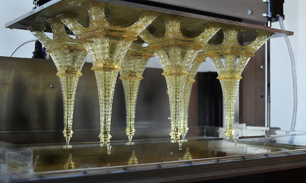
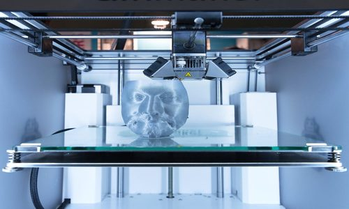
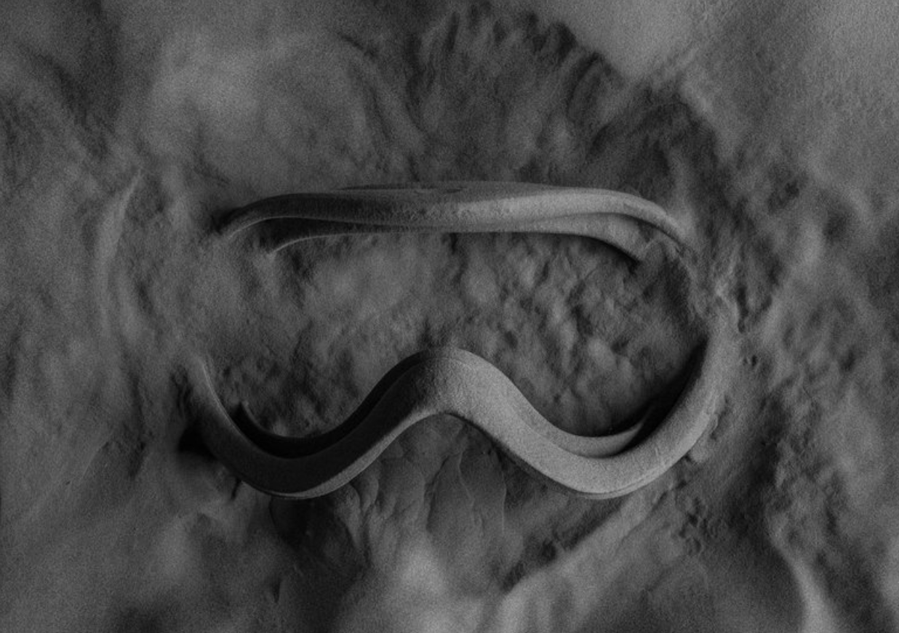
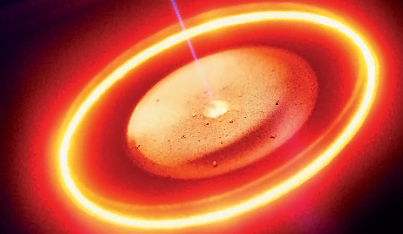
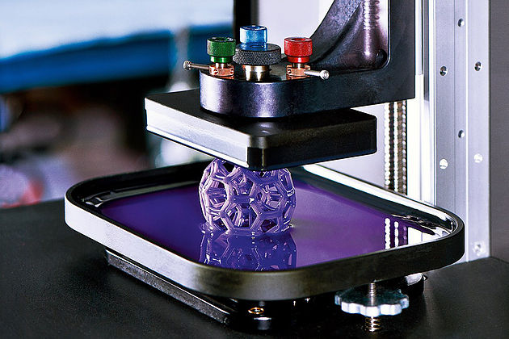

-

Stereolithography
Stereolithography makes use of a liquid plastic as the source material and this liquid plastic is transformed into a 3D object layer by layer.
-

Digital Light Processing
DLP technology is very similar to Stereolithography but differs in that it uses a different light source and makes use of a liquid crystal display panel.
-

Fused Deposition Modeling
Objects are built by heating a thermoplastic filament to its melting point and extruding the thermoplastic layer by layer.
-

Selective Laser Sintering
SLS makes use of powdered material that is placed in a vat. For each layer, a layer of powdered material is placed on top of the previous layer using a roller and then the powdered material is laser sintered according to a certain pattern for building up the object to be created.
-

Electron Beam Melting
The machine distributes a layer of metal powder onto a build platform, which is melted by the electron beam. The build platform is then lowered and the next layer of metal powder will be coated on top.
-

Laminated Object Manufacturing
LOM is a rapid prototyping system. In it, layers of adhesive-coated paper, plastic, or metal laminates are successively glued together and cut to shape with a knife or laser cutter.